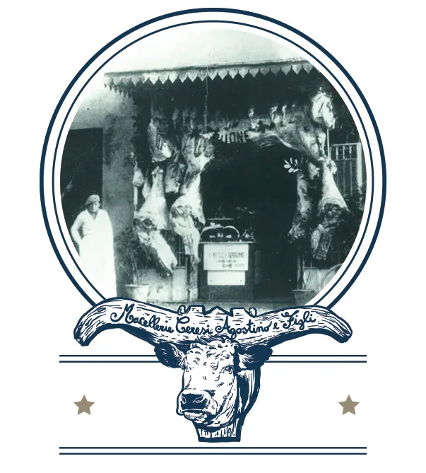

Home / Chi siamo
Una macelleria storica, a Cento
Cinque generazioni di tradizione e innovazione nella lavorazione della carne.
La famiglia
Da padre in figlio
La macelleria è gestita dalla stessa famiglia da cinque generazioni: il mestiere si tramanda da padre in figlio, con lo stesso rispetto per la qualità.
Oggi Marcello e i suoi fratelli continuano la tradizione e aggiungono nuovi servizi: i piatti pronti cotti con forni a vapore e a fiamma, i ragù e lo shop online.
Il ragù è nato nel 2020 da un'idea della mamma, Carlotta: la carne è tritata grossa, apposta.

In cosa crediamo
Rispetto per l'animalee per la sua qualità di vita
Materia primascelta con attenzione
Lavoro pazientee accurato
Le personecura del rapporto con chi entra in bottega